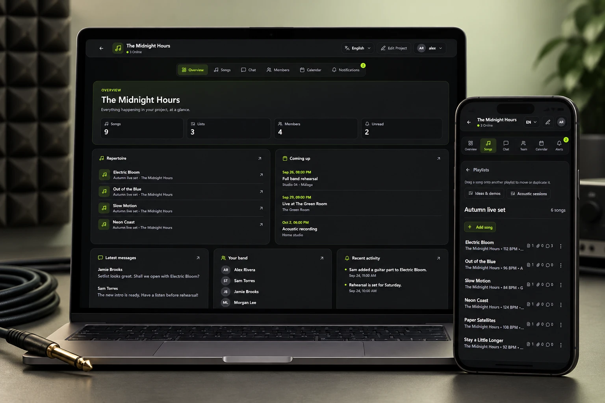

A useful starting point for every session
The overview surfaces songs, lists, members and unread activity, alongside the next events and recent conversations. It gives the band a shared starting point before diving into the work.
Bandanize
A personal project with Raúl del Valle, built around the way bands actually work: gathering ideas, learning parts and getting ready to play together. A focused workspace for the music and everything around it.

Updated from the current Bandanize interface. The gallery pairs illustrative product and branding mockups with direct app captures using a fictional band and demonstration data.
We could not find a platform that brought our musical projects, tablatures, files and calendars together in the way we wanted. We decided to design the tool we wished we had.
The current interface gives that idea a more focused structure. A project overview connects the repertoire, upcoming sessions, conversations and recent activity. From there, each musician can move into the detail they need.
The overview surfaces songs, lists, members and unread activity, alongside the next events and recent conversations. It gives the band a shared starting point before diving into the work.
Song lists organise the repertoire. Inside a song, tempo, key, files and instrument parts share the same context. Tablatures and passage comments keep musical discussion close to the material.
The calendar, chat and member views live within the same project. Rehearsals and gigs become part of the workspace instead of a separate thread to keep track of.
Created with Raúl del Valle
The darker visual system uses charcoal surfaces, restrained borders and lime accents to separate content from actions. A consistent project navigation connects the overview, songs, chat, members, calendar and notifications.
On smaller screens, the repertoire becomes a compact list with the same song information and quick access to other playlists. The layout changes; the project context stays familiar.
Making music together gives the product a concrete point of view. The design brings the practical work of being in a band closer to the creative work, with a structure that moves from the whole project down to an individual part.
This case study documents the current interface and its design decisions. The example content demonstrates the workflow rather than representing usage or measured outcomes.
Explore Bandanize on GitHub